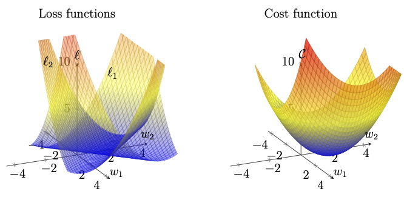
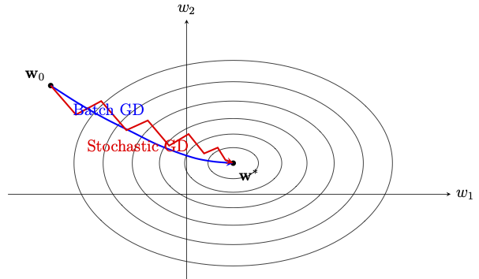

Chapter 5: Optimization Algorithms
An artificial neural network (ANN) consists of several parameters, which can be broadly categorized into two types, namely, trainable (or learnable) parameters and hyperparameters. Training a neural network is the process of determining appropriate values of the trainable parameters (weights and biases) such that the ANN function (defined in Definition 1.2) approximates the required input-output mapping. Often, such mappings are implicitly represented in training data and the trainable parameters of the network are iteratively updated to minimize the error between the predicted outputs and the true outputs. The error is quantified by an appropriately chosen loss function, and when averaged over the entire dataset, it is referred to as a cost function (see Definition 4.1).
The minimization of a cost function depends on the knowledge of how the changes in the network parameters affect the cost. This requires the computation of the gradient of the cost function with respect to the parameters. The backpropagation algorithm discussed in the previous chapter can be used to efficiently compute these gradients by propagating errors backward through the network, starting from the output layer to the first hidden layer. Once gradients are available, the parameters are updated using gradient-based optimization algorithms. The most basic method is the gradient descent method (GD), where parameters are iteratively updated in the direction opposite to the gradient in order to reduce the cost. We also have some important variants of the GD method, such as the stochastic gradient descent (SGD) method and the SGD method with momentum to improve training efficiency and stability.
In this chapter, we discuss the GD method and some of its variants. We first introduce the fundamental idea of the GD method in Section 5.1 and give three ways to implement this method, namely, the batch GD method, the SGD method, and the mini-batch GD method. In Section 5.2, we discuss some important modifications of the mini-batch GD method mainly to accelerate the convergence.
5.1 Gradient Descent Methods
Consider a cost function \(\mathcal{C}(\boldsymbol{\Theta})\) as given in Definition 4.1. The aim is to obtain a \(\boldsymbol{\Theta}^*\) such thatTo iteratively minimize the cost function, we need to know in which direction to move \(\boldsymbol{\Theta}\) to decrease the cost most efficiently. This direction is determined by the gradient \(\nabla_{\boldsymbol{\Theta}}\mathcal{C}\).
5.1.1 Batch Gradient Descent Method
Let us consider a simple case of \(\boldsymbol{\Theta}=(w_1, w_2, \ldots, w_n)\in \mathbb{R}^n\) to motivate why we update the weights in the gradient direction \(\nabla_{\boldsymbol{\Theta}}\mathcal{C}\).Let us start with an arbitrarily chosen vector \(\boldsymbol{w}_0\in \mathbb{R}^n\). We want to move to a new vector
Using the first-order Taylor expansion, we have
Neglecting higher-order terms of \(O(\eta^2)\), the change in the cost function is approximately
Using the Cauchy-Schwarz inequality, we get
where \(\eta > 0\) is the learning rate and \(\boldsymbol{\Theta}_{0}\) is an initial guess.
Interpreting \(t_k=k\eta\) as a discrete time, the above scheme is the explicit (forward) Euler discretization of the system of ordinary differential equations
Further, assume that \(\mathcal{C}\in C^2(\mathbb{R}^n)\) and the Hessian \(\nabla_{\boldsymbol{w}}^2 \mathcal{C}\) is bounded (the gradient \(\nabla_{\boldsymbol{w}}\mathcal{C}\) is Lipschitz) in a neighborhood of a nondegenerate local minimum \(\boldsymbol{w}^*\) (strict minimum). Then, by choosing \(\boldsymbol{w}_0\) in this neighborhood, the piecewise linearly interpolated trajectory computed using the above Euler scheme converges (uniformly on any compact time interval) to the solution of the above gradient system as \(\eta \rightarrow 0\).
As a consequence, a minimizer of a \(C^2\) cost function can be viewed as an equilibrium point of the above gradient system in the parameter space. It is known that strict (nondegenerate) minima of \(\mathcal{C}\) are asymptotically stable equilibrium points of the above gradient system.
Input:
- Initial guess \(\boldsymbol{\Theta}_0 \in \mathbb{R}^n\);
- Learning rate (step size) \(\eta>0\);
- Maximum iterations \(K\).
For \(k = 0,1,2,\dots,K-1\)
-
Compute the gradient
\(\boldsymbol{g}_k = \nabla_{\boldsymbol{\Theta}} \mathcal{C}(\boldsymbol{\Theta}_k)\)
(using the backpropagation algorithm for the neural network). - Update the parameter:
\[ \boldsymbol{\Theta}_{k+1} = \boldsymbol{\Theta}_k - \eta \, \boldsymbol{g}_k. \]
5.1.2 Stochastic Gradient Descent (SGD)
Recall, from Definition 4.1, that the cost function is defined asSince, for each iteration of GDM, the gradient has to be computed using the entire dataset of size \(N\), the computational cost of evaluating (5.2) per iteration grows linearly with \(N\). Since deep learning often involves large-scale datasets, the batch gradient descent method becomes prohibitively expensive.
An alternate approach is the stochastic gradient descent method (SGD) which replaces the gradient of the cost function by the gradient of the per-sample cost \(\ell_{i_k}(\boldsymbol{\Theta})\) for a randomly chosen sample \((\boldsymbol{x}_{i_k},\boldsymbol{y}_{i_k})\). For an initial choice \(\boldsymbol{\Theta}_{0}\), the update rule for each iteration is
where \(i_k \sim \operatorname{Uniform}\{1,\ldots,N\}\) (i.i.d.), for each \(k=0,1,2, \ldots.\)
Since \(i_k\) is uniformly sampled, we have
Thus, SGD can be viewed as a noisy discretization of the gradient system. The stochasticity introduced by the procedure often helps in escaping saddle points and shallow local minima. However, it causes fluctuations in the trajectory and leads to slow convergence.

Figure 5.1: The two individual loss surfaces \(\ell_1\) and \(\ell_2\) corresponding to two training examples, and their average, the cost function \(\mathcal{C}\) given in Example 5.1 is depicted. Each individual loss is a parabolic cylinder with an infinitely extended valley, whereas their average is an elliptic paraboloid with a unique minimum.
Consider a linear model
We observed that the mean-square cost function in the above example has a unique minimum. However, this is not always the case, even for linear models.
The uniqueness of the minimizer \(\boldsymbol{w}^*\) established above is a consequence of the cost function \(\mathcal{C}\) being strict convexity.
For the linear model considered above, the Hessian
For a genuinely nonlinear model, the Hessian of \(\mathcal{C}\) typically varies with \(\boldsymbol{w}\), and hence need not be positive definite everywhere. Consequently, \(\mathcal{C}\) need not be globally convex. Therefore, as in Remark 5.1, the positive definiteness of the Hessian near a nondegenerate critical point \(\boldsymbol{w}^*\) gives strict convextiy of \(\mathcal{C}\) only locally, in a small neighborhood of \(\boldsymbol{w}^*\). So, we can only expect \(\boldsymbol{w}^*\) to be a local minimizer.
5.1.3 Mini-batch Gradient Descent
The batch GD method uses the gradient of the cost surface, which is the average of the gradient of the loss function evaluated at all the training examples. This results in a path that smoothly descends towards the minimum, but it is computationally expensive. On the other hand, the stochastic GD method uses the gradient corresponding to a randomly selected training example at each iteration. This improves computational efficiency, but its path is more irregular. Figure 5.2 depicts a visual illustration of the typical paths followed by the batch GD and stochastic GD methods.
Figure 5.2: Typical paths followed by batch GD and stochastic GD from the same starting point. The ellipses represent level curves of the cost function, with the innermost curve surrounding its minimum.
A compromise between batch GD and SGD is to average the gradients over a small randomly chosen subset (mini-batch) \(\mathcal{B}_k\subset \{1,\dots,N\}\) with \(|\mathcal{B}_k|=M\ll N\). The update reads
where
Another approach in mini-batch gradient descent method, which is common in practice, is the epoch-wise training. Here, in each epoch, the entire training dataset is first randomly shuffled and then divided into mini-batches of size \(M\ll N\). This results in at least \(N/M\) mini-batches, which are used to update \(\boldsymbol{\Theta}\) sequentially within that epoch. If \(N\) is not exactly divisible by \(M\), then the last mini-batch of the epoch contains the remaining number of examples. Thus, each mini-batch produces one parameter update, and one epoch corresponds to a complete pass over the training dataset, where all mini-batches are processed once.
5.2 Momentum and Adaptive Gradient Methods
In this section, we discuss some variants of the GD method discussed in the previous section. These variants are proposed to accelerate the convergence of the GD method.5.2.1 Momentum Method
Recall, in physics, the momentum of a moving particle is defined as the product of mass and velocity of the particle. Taking the physical motivation, we add an extra term \(\mu \boldsymbol{v}\) to the mini-batch SGD method to getis the mini-batch cost function, \(\mu\in [0, 1)\) is the momentum parameter, and
By taking \(\boldsymbol{v}_0=\boldsymbol{0}\), the iterative formula (5.5) can be rewritten as
and is referred to as the momentum method.
mass \(\times\) acceleration = force
For a particle moving on the cost surface, we have
Considering the approximations
The momentum term can also be interpreted from a control-theoretic perspective. Treating \(\boldsymbol{v}_k\) as a control input, the term \(\mu \boldsymbol{v}_k\) acts as a feedback term with \(\mu\) playing the role of a feedback gain. This feedback regulates how strongly past velocity influences the current update, smoothing oscillations and accelerating convergence along consistent descent directions.
5.2.2 Nesterov Accelerated GD Method
The momentum method discussed in the above subsection evaluates the gradient of the cost function at the current iteration value \(\boldsymbol{\Theta}_k\) while updating the next iteration. Since the momentum is in the direction \(\mu \boldsymbol{v}_k\), the convergence can be further improved by evaluating the cost gradient at the look-ahead point- Show that \((\Theta_k, v_k)\) satisfies the linear recursion
\[ \begin{pmatrix}\Theta_{k+1}\\ v_{k+1}\end{pmatrix} = M_{\mathrm{NAG}} \begin{pmatrix}\Theta_{k}\\ v_{k}\end{pmatrix}, \qquad M_{\mathrm{NAG}} = \begin{pmatrix}1-\eta a & \mu(1-\eta a)\\ -\eta a & \mu(1-\eta a)\end{pmatrix}. \]
- Compare \(M_{\mathrm{NAG}}\) with the matrix \(M\) obtained for the classical momentum method on the same quadratic cost. Identify the extra factor contributed by the look-ahead point.
- Fix \(a=1\), \(\eta=0.1\), and \(\mu=0.9\). Compute the eigenvalues and the spectral radius of both \(M\) and \(M_{\mathrm{NAG}}\) for these values, and verify that \(\rho(M_{\mathrm{NAG}}) < \rho(M)\), where \(\rho(M)\) is the spectral radius of the matrix M defined as
\[ \rho(M) := \max\{ |\lambda| : \lambda \text{ is an eigenvalue of } M \}. \]
The following statement, however, holds for every initial vector \(\boldsymbol{x}_0\), with no such qualification: \(\boldsymbol{x}_k \to \boldsymbol{0}\) as \(k\to\infty\) if and only if \(\rho(M) < 1\). Further, whenever the geometric estimate above applies, a smaller spectral radius means a faster rate of convergence, and \(\rho(M)\) is the number that governs this rate.
5.2.3 Adaptive Step Size Methods
So far, we have kept the learning rate \(\eta\) constant for all the parameters and across all the iterations. This is the simplest form of a GD method, whereas the learning rate can depend on the iteration asFurther, to accelerate the convergence, it is also possible to vary the learning rate across parameters. In this subsection, we present some of the important such methods.
5.2.3.1 AdaGrad.
Each parameter \(\Theta_j\) has its own effective learning rate scaled by the accumulated squared gradients given byThe main advantage of AdaGrad is its ability to assign a different effective learning rate to each parameter based on its gradients of the past iterations. Thus, parameters with large gradients in the past receive smaller learning rates while parameters with smaller gradients retain larger updates. This is particularly important for sparse-gradient problems. However, the disadvantage is that the accumulation \(G_{j,k}\) only increases and consequently, the learning rate only decreases.
5.2.3.2 Root Mean Square Propagation (RMSProp)
In order to address AdaGrad’s disadvantage of decay in learning rate, RMSProp uses an exponential moving average of squared gradients given by5.2.3.3 Adaptive Moments (Adam).
We have seen that the AdaGrad updates the effective learning rates through cummulative history, whereas the RMSProp updates with a decaying memory.The Adam method combines RMSProp with momentum by including the exponentially weighted moving averages of both gradients and squared gradients. The update rule for the Adam method is given by
The following problem clarifies the role of \(\widehat{m}\) and \(\widehat{v}\) through the concept of bias correction in statistical estimation.
- Show that \(\mu_k\) is a biased estimator of \(\mu\).
- Show that \(\widehat{\mu}_k\) is an unbiased estimator of \(\mu\).
5.2.3.4 AdamW
A commonly used variant of Adam is AdamW, which incorporates an \(L^2\) penalty through a decoupled weight-decay term. Formally, one may consider the regularized costAdamW is widely used in the training of Transformer-based models and large language models. In particular, it is the default optimizer in the current (at the time of writing this notes) Hugging Face Transformers training framework.